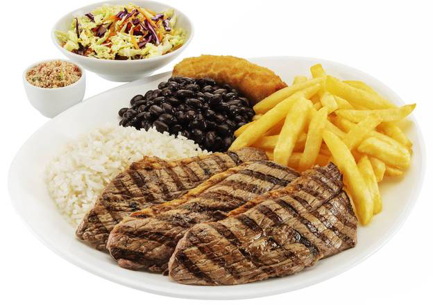
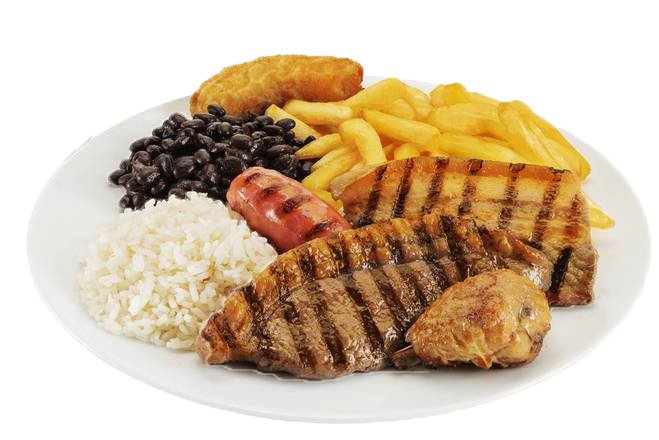
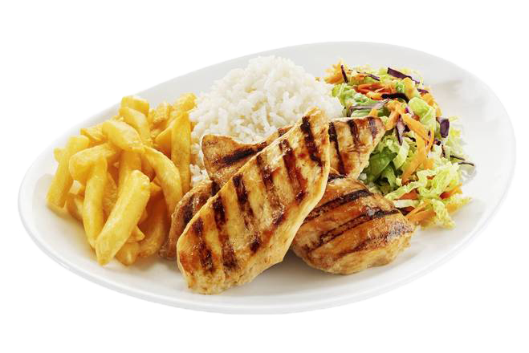
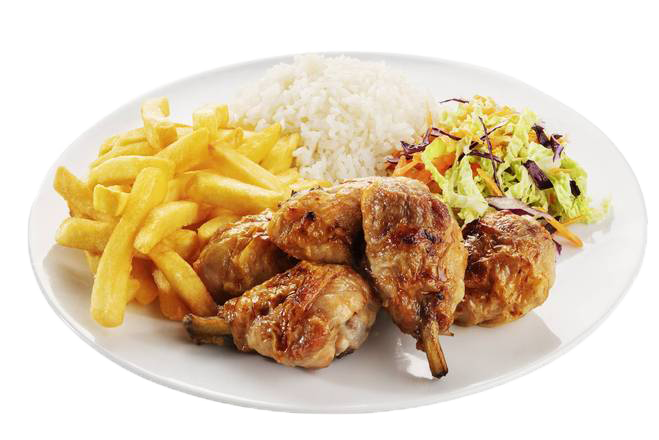
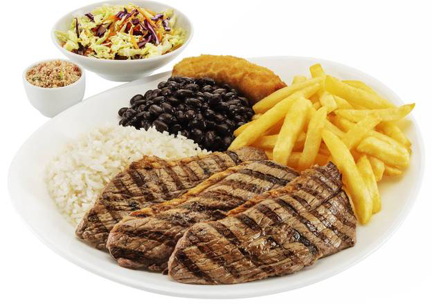
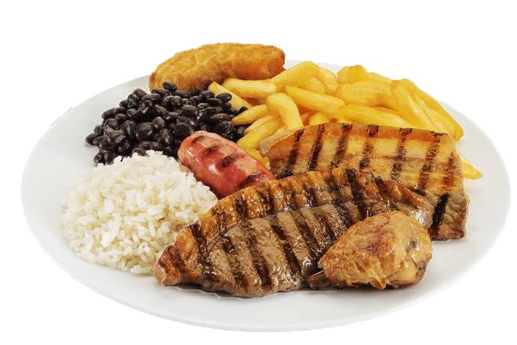
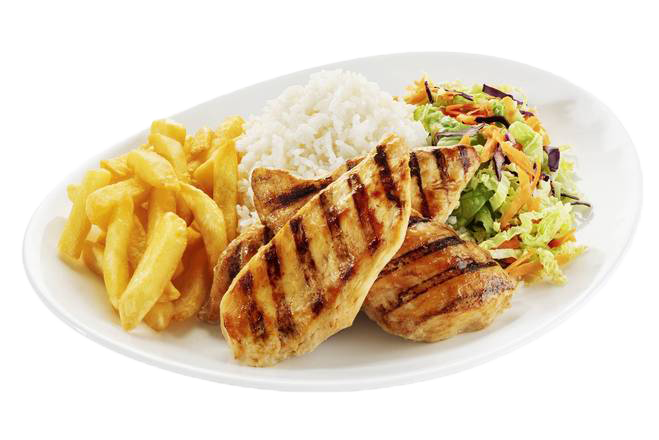
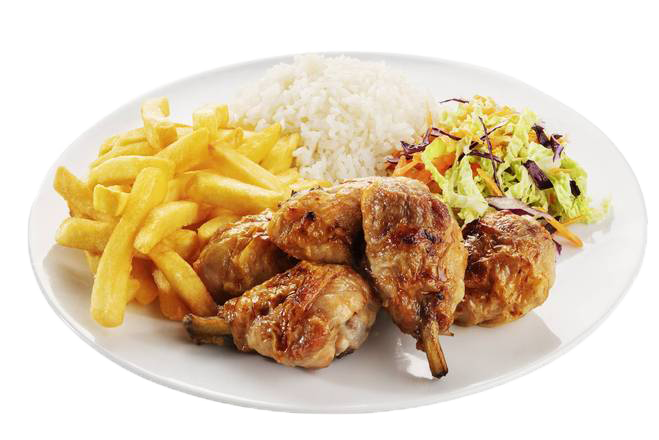

Sobre Nós
O Churrasbrasa é um restaurante especializado em churrascos, trazendo o melhor da culinária brasileira para sua mesa. Utilizamos ingredientes frescos e de alta qualidade para garantir uma experiência única aos nossos clientes.
Descubra o sabor autêntico do churrasco brasileiro. Venha desfrutar de nossas especialidades feitas com ingredientes frescos e selecionados.
Explore 







O Churrasbrasa é um restaurante especializado em churrascos, trazendo o melhor da culinária brasileira para sua mesa. Utilizamos ingredientes frescos e de alta qualidade para garantir uma experiência única aos nossos clientes.